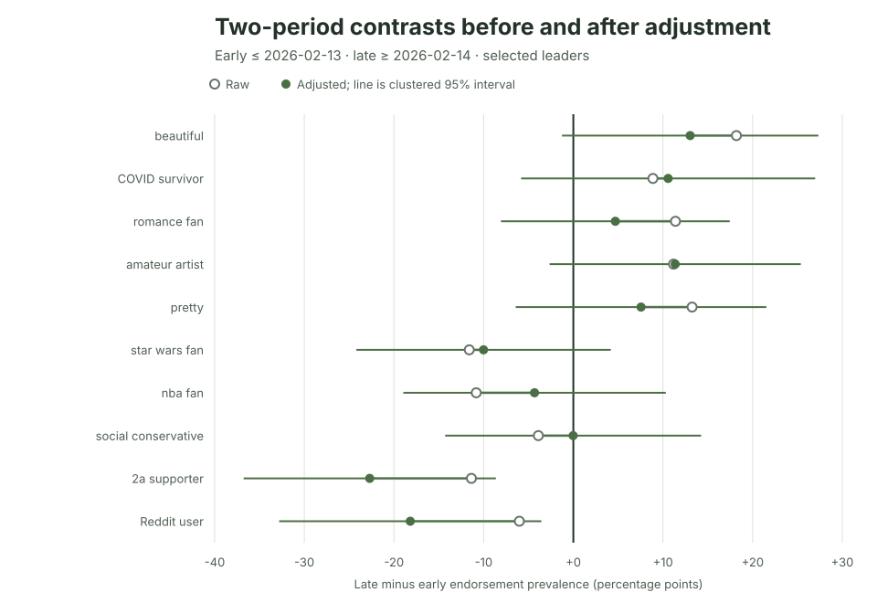

Ipseity Daily Pulse · 2026-09-23
What changes after adjustment?
A before-and-after contrast can change when recorded sample composition changes.
By Ceetown · 3 minute read
A before-and-after comparison can change when the people answering change.
For the 20 Ipseity Daily signifiers with the most extreme linear trends, all 20 raw late-half versus early-half comparisons point in the same direction as the corresponding trend. After accounting for recorded age, sample composition, weekday, and month, 19 still do. The typical adjustment moved a contrast by 4.2 percentage points.
The one reversal was single: its raw late-minus-early
contrast was -7.1 points, while the adjusted estimate was +1.1 points
with a wide respondent-clustered 95% interval from -13.9 to +16.2. That
is not evidence of an increase. It is a reminder that a descriptive
comparison can depend on who answered and when.
Source: Ipseity Daily download page

Evidence note
The values use canonical microdata through 2026-09-22, retrieved at
2026-09-23T10:09:23Z. The common split is the full dataset window's
calendar midpoint: the early period is 2025-07-08 through 2026-02-13,
and the late period is 2026-02-14 through 2026-09-22. The models are
unweighted and the 20 signifiers were selected from 704 linear trends.
No primary trend passed the 5% Benjamini–Hochberg or Bonferroni screen.
Adjustment covers only recorded covariates and calendar terms; it does
not establish population change. Full estimates and limitations are
recorded in CURRENT-FINDINGS.md
and outputs/leader-early-late-sensitivity.csv.
Snapshot note: This dated entry and figure are preserved from the stated check. Links to the cumulative report and aggregate tables may show newer data.